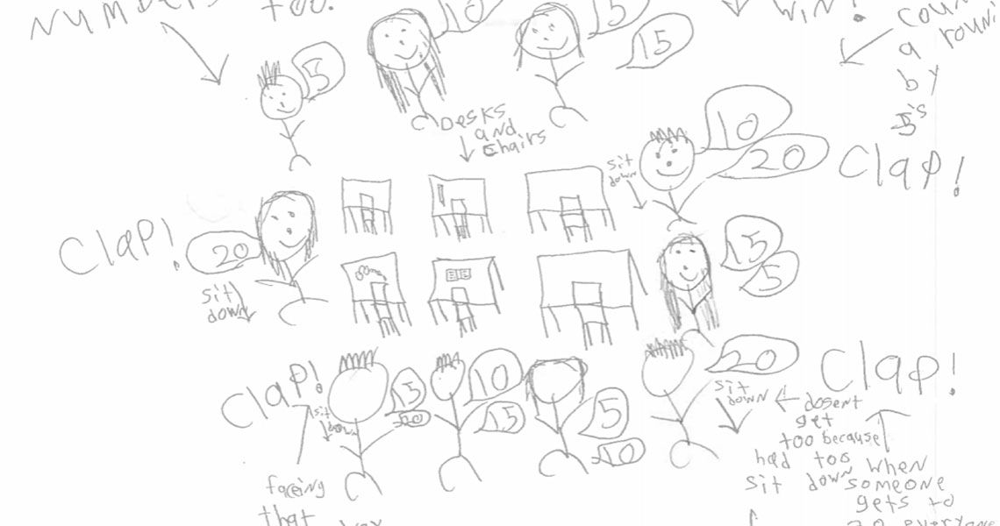
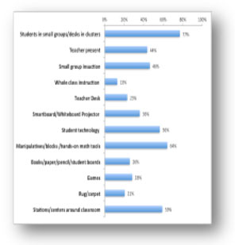

Drawing on Math
Although the individual classroom drawings collected from students will provide insight into student views of teaching and learning, there are many approaches for coding and analyzing a collection of math classroom drawings.
We have generally found three approaches for empirically examining student drawings: holistic review, trait coding, and emergent analytic coding.
Coding Drawings
Emergent Analytic Coding
Create a rubic and code the drawings for a list of characteristics that are either present or absent
Holistic Coding
Assemble packet of drawings
Small teams answer these questions:
- What patterns do you see in the drawings?
- Why do you think these patterns occur?
- What do you think might be done differently in your school as a result of what you see in the drawings?
Trait Coding
Identify 1 trait
Establish a scale for the degree that trait is present (1-5)
Rate the degree each drawing/text exhibits that trait
Analytic Coding
In analytic coding, individual drawings are examined using a rubric where different characteristics are coded as either present or absent. The goal with analytic coding is examine your drawings in a way that is: objective, reliable/consistent, and can be summarized quantitatively. Teachers are well familiar with using rubrics to score student work, and this process is very similar. For the drawing prompt, “Draw a picture of your math class”, the research team developed a coding rubric with 55 independent codes:
Each code has an operational definition and example anchor drawings to help inform the rater if they are unsure if a drawing exhibits a given characteristic/code. Each drawing can have many codes and they are not mutually exclusive. For example, if the drawing depicts only one student, the code for “one student depicted individually” would be selected. Typically, each drawing takes a minute or two to code once the rater becomes familiar with the rubric.
We have provided an example rating sheet and coding rubric that teachers can use to rate their own “Drawing on Math” classroom drawings and see a quantitative summary of their collection.
Coding Rubric
Coding Rubric Operational Definitions
Example drawings for each coded characteristic
Holistic Review
As the simplest way to engage teachers in examining their student drawings, holistic review provides just enough structure for examining a class set of drawings. Typically in this approach, small groups of teachers (or sometimes students) spend 15-20 minutes examining a classroom set of drawings to answer three questions:
- What patterns do you see in the drawings?
- Why do you think these patterns occur?
- What do you think might be done differently in your classroom as a result of what you see in the drawings?
In more formal professional development settings, teacher groups can report their findings back to the larger group for greater reflection and discussion.
Trait Coding
In trait coding, drawings are analyzed at a higher level of abstraction and rated for the extent that a particular trait is represented. For example, Dr. Cengiz Gulek developed a four-point scale to rate the extent to which middle school drawings exhibited teacher-directed instructional approaches:
1 — Highly teacher-directed mode of instruction
2 — Moderately teacher-directed mode of instruction
3 — Moderately student-centered mode of instruction
4 — Highly student-centered mode of instruction
For each point on the scale, a list of features associated with the level of student-centered or teacher-directed instruction and sample drawings was prepared to create a guide for rating the mode of instruction represented in students’ drawings.
Muskegon Area Intermediate School District (MAISD)